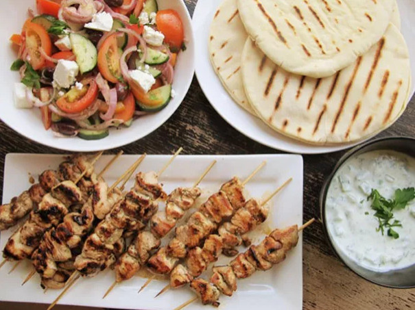

Chicken Souvlaki
Return to homepage

Chicken souvlaki is an aweome summer grill recipe!
Ingredients
Marinade
- 3 lemons
- 4 tablespoons red wine vinegar
- 4 tbsp olive oil
- 2 tsp kosher salt
- 1/2 tsp black pepper
- 2 lb chicken breast, cut into 1 inch pieces
- 4 cloves garlic, grated
Tzatziki Sauce
- 1 medium cucumber, peeled, seeded, and diced
- 1/2 tsp salt
- 1 cup plain greek yogurt
- 1 tbsp chopped fresh dill
Salad
- 1 lb cherry tomatoes, halved
- 1 small red onion, sliced thinly
- 3/4 cup kalamata olives, pitted and halved
- 6 oz feta cheese
- 1/4 cup chopped fresh parsley
- pita bread for serving
Directions
-
In medium bowl, whisk lemon juice, vinegar, olive oil, oregano, salt, and black pepper. Place chicken cubes in a separate medium bowl.
Mix in grated garlic and 7 tablespoons of dressing. Toss chicken to coat evenly, cover, and refrigerate to marinate for about 2 hours,
tossing occasionally. Set remaining dressing aside for salad.
-
While chicken marinates, make the tzatziki sauce: Place cubed cucumbers in strainer set over bowl. Toss with 1/2 teaspoon salt and let sit to drain,
about 30 minutes. Gently pat cucumbers dry with paper towel, place in small bowl, and mix with garlic, yogurt, and dill. Season to taste with salt.
Refrigerate until ready to serve.
-
Skewer chicken pieces on 8 to 12 skewers. Discard used marinade. Heat grill or grill pan over medium-high heat. Place chicken skewers on grill
(or cook in batches on grill pan) until well browned and internal temperature registers 155° on instant read thermometer, turning evenly to cook on all sides,
about 5 minutes total. (Adjust temperature of grill if necessary). Remove chicken to a serving platter and let rest 3 minutes. Meanwhile, briefly grill pitas and keep warm.
-
Just before serving, prepare the salad: Whisk olive oil into reserved chicken marinade. Add tomatoes, onions, cucumber, olives, feta, and parsley.
Season with salt and pepper. Serve skewers with salad, pita, and tzatziki sauce. Remove chicken from skewers to stuff into pitas with sauce and salad.
Recipe and photo credit: Serious Eats
Return to homepage